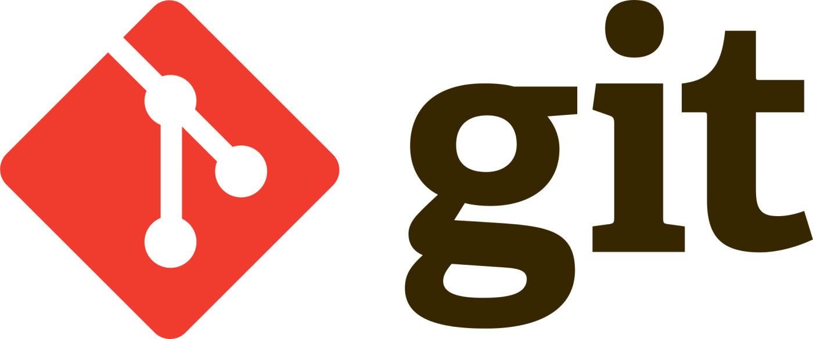
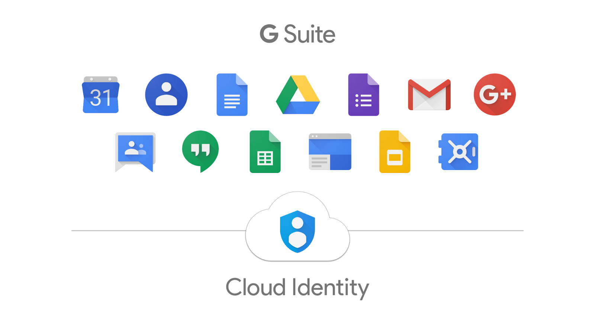
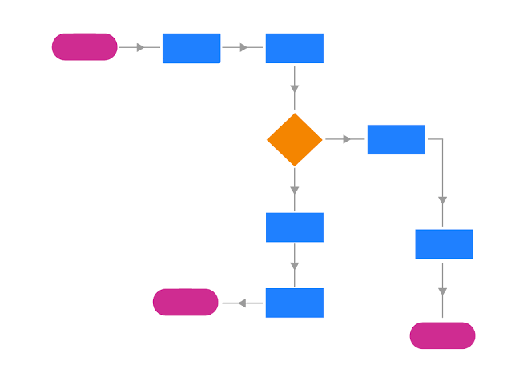

Desenvolupar col·laborativament en equip sobre el mateix codi
Històric de canvis, qui els ha realitzat, quan...
Etiquetatge de versions
Comparar, revertir codi de versions

Git
És el sistema de control de versions distribuït més utilitzat en el món. Va ser creat al 2005 per Linus Torvalds. A partir d'aquest, s'han creat diverses plataformes com Github, que adapten les funcionalitats a una interfície web, allotjant repositoris al núvol, fent-los accessibles desde qualsevol lloc.

Google Suite
Desat automàtic
Traçabilitat
Historial de versions
Col·laboració eficient
Revisió de canvis (què, qui, quan)

Flux de treball
Alguns dels termes més importants en el flux de treball de control de versions de Git.
Repositori -> Carpeta especial on es desa el projecte
Tecnologia que permet als ordinadors fer tasques que abans necessitaven intel·ligència humana. La IA generativa crea contingut nou predient allò més probable a partir de grans quantitats de dades.
Prompt engineering — RASCEF
RRol
→
AAcció
→
PPassos
→
CContext
→
EExemple
→
FFormat
Riscos a tenir en compte
La IA generativa pot reproduir biaixos de les dades amb què s'ha entrenat, inventar-se respostes (al·lucinacions) quan no sap la resposta real, i cometre errors en càlculs complexos o repeticions en bucle. Aquests problemes s'han reduït amb els models més recents, però cal mantenir sempre un esperit crític.
Exemple real d'al·lucinació: el mateix prompt canviant una paraula genera resultats completament diferents.